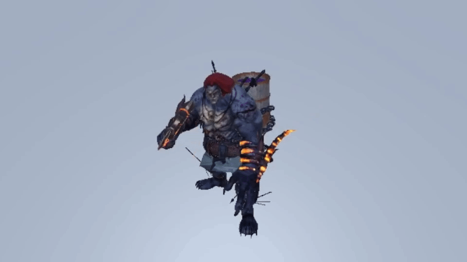
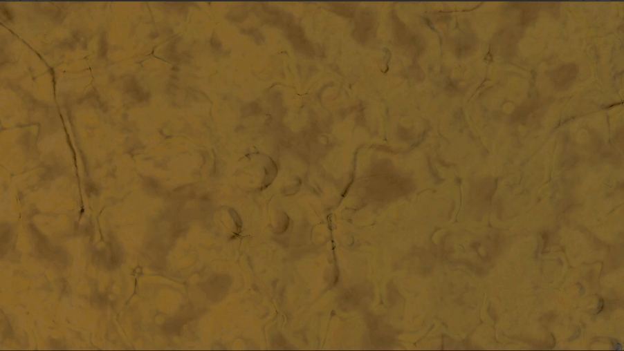
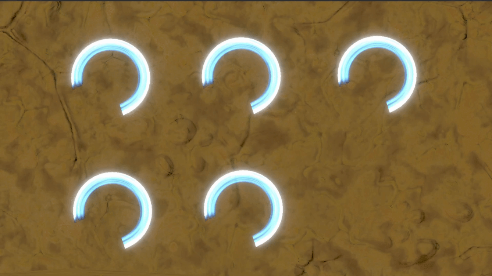
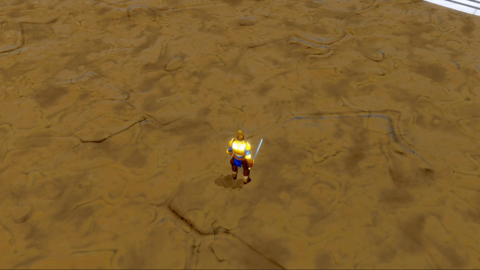
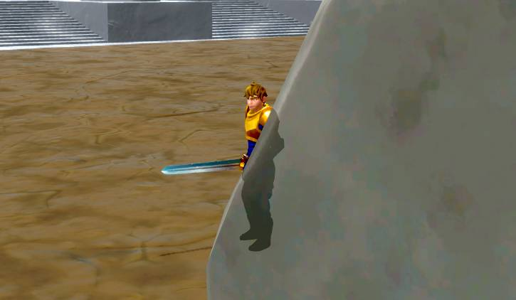
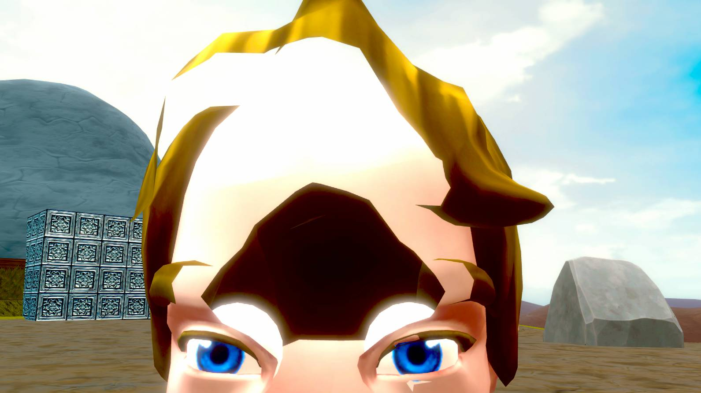
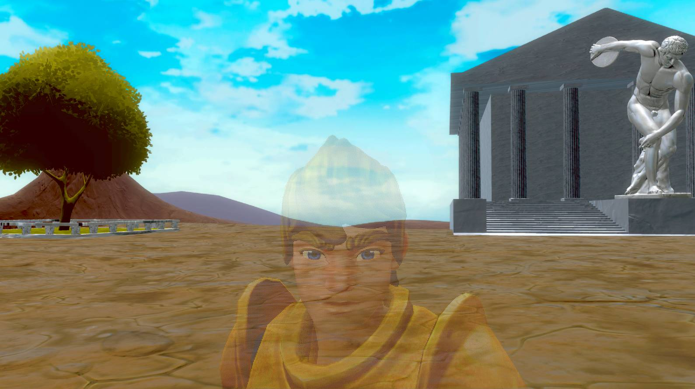

Overview
Olympus Quest is a VFX case study inspired by action RPG combat systems. This gave me an opportunity to develop new skills in creating shaders, animations, and code for a combat system. I also developed a new camera controller that follows the player dynamically, detects collision, and x-rays the player when they are behind an object.
Download: Olympic Quest


Overview
My primary goal with this project was to create the VFX for a sword attack in a melee combat system. I was inspired by games like Final Fantasy VII and Kingdom Hearts 3 which have robust combat systems with a multitude of attacks and abilities. These types of Action RPG games feature flashy effects that bring basic attacks up to the next level. My goal was to make a basic three-hit combo in this style to practice creating visual effects.
Deciding Where to Start
This project proved to be quite the challenge, as I had never created this type of effect before and wasn’t sure where to begin. In the past, I’ve used trail renderers for this type of ability. However, this approach often leads to attacks looking choppy, and the trails can often warp or lose definition at certain camera angles.
After some research, I discovered that many games use 3D meshes that trace the path of the attacks, combined with shaders and particles to produce the desired effect. Once I knew how to implement the effects, I needed animations to apply them to.
Creating the Effects
I went through several iterations and tried multiple different art styles in order to create the sword trail. I tried using hand-painted textures and scrolling them along a curve that followed the blade. This worked, but didn’t match the art style of the game. My next attempt used a generic, donut-like curve rather than following the sword directly. This made the trail less polygonal, and the added thickness makes it visible from any camera angle. Finally, I created a custom shader that uses noise textures to generate the flow of the blade. I was happy with this result, but it still felt like it was lacking.
Supplemental Particles
While the slash effect looked exactly how I wanted it, the attacks still felt incomplete. I decided to do more research and looked into some games that had similar combat systems. I discovered that many games use particles in addition to the trail to add even more flare to the attacks. I created small particles that come off the trail, a ring effect that emanates from the center, a burst at the end where the blade stops, and a distortion wave that warps the surroundings slightly.
Final Results
With all of these effects added at once, the attack feels much more impactful. I then timed it to match the animations of the attacks and got my final result.
I added similar effects to the enemy when the attack hits. There are particles pulled in to the point of contact, a burst of light, and even a small chance of an addition slash across the screen for more variety. In the end, I’m happy with how this combat system turned out. The VFX bring an extra level of flare and polish that make the attacks feel more impactful and improve the game feel as a whole.

Overview
Cameras are one of the most difficult parts of a game to get right. There are many different implementations from static to following the player. A bad camera can make it hard for the players to enjoy the game, and can even end up causing them to get lost or disoriented. I already experienced this issue before on a previous project, so I wanted to make sure I had a solid camera this time.
Selecting a Camera Type
The most basic way to implement a third person camera is to have it follow the player’s position with an offset. This approach is great for exploration focused games, racing games, dungeon crawlers, and many others. For action games, however, a more dynamic hands-on approach can be beneficial. My goal is to implement a camera that follows the player and rotates as they move, similar to those seen in games like Super Mario Odyssey and Kingdom Hearts.

Camera Movement
To replicate the movement, there are three states I need to consider. When the player is moving the camera stick, the camera should rotate around them no matter what. If they aren’t, I look at how the character is moving. If they are moving straight, I update the camera’s position, and if they’re moving to the side, I update its rotation. This creates an effect where the camera follows the player when they move away from it, but rotates to look at them if they walk around it rather than moving to the side.

Camera Collision and Culling
A common issue with 3D cameras is handling collision. It should never be possible for the player to be off-screen during gameplay, so the camera has to be able to adapt to different obstacles that could get in the way. A common approach is to pull the camera in any time the player would be behind a wall. While this works, its often jarring and can confuse the player. It can also easily be triggered by tiny pieces of geometry that don’t fully obscure the player. Instead, my preferred method is to render the player through the wall in an x-ray effect. This keeps the player visible at all times. This is only an option when the camera is fully on the other side of a wall however. If it is inside of a wall, zooming in is still the safest option to make sure no out-of-bounds geometry is visible.
Preventing Player Clipping
When the camera zooms in by a wall, it is often possible for it to clip into the character’s geometry. This causes some faces not to be rendered properly and can show through the character’s body.
One potential solution would be to simply limit how close the camera can get, but then the previous issue can occur again, allowing the camera to be inside of walls. Instead, the solution is to fade the player out when the camera gets close. I chose to use dithering to do this, as it’s the easiest option and has a unique look to it. With this, some percentage of the player’s pixels are not rendered when the camera is close, creating an effect that looks like transparency.
Target Locking
Everything so far is common camera controls for any game. However, I also wanted to add extra camera features that help accent the combat system. I created a lock on camera that overrides the basic movement, instead focusing on a point between the player and the targeted enemy. It maintains an angle offset to make sure both characters are on screen during combat, and provides a more cinematic view of the combat.

Final Results
There are many different features that go into creating a camera for a 3D adventure game. Movement, collision, and culling all have to be taken into account to ensure the player can easily navigate and keep track of their character while playing. When done properly, a good camera should be unnoticed by the player, allowing them to engage directly with the core gameplay.